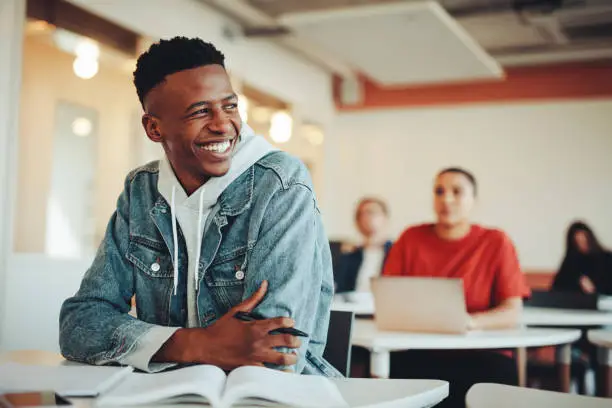
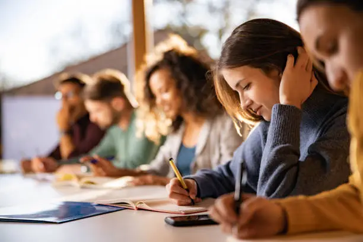
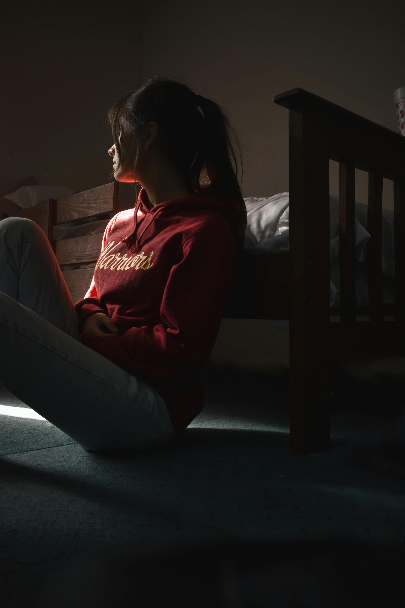
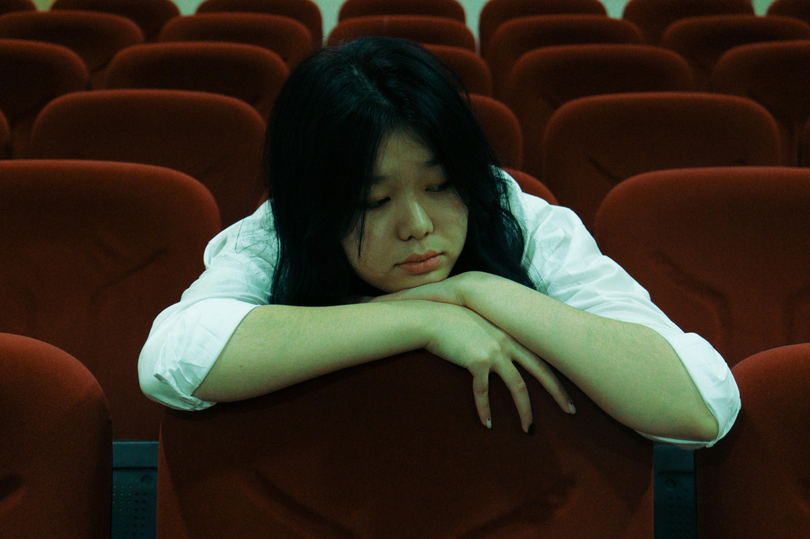
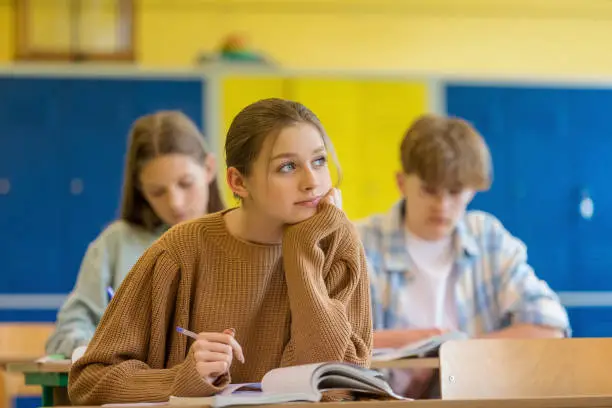
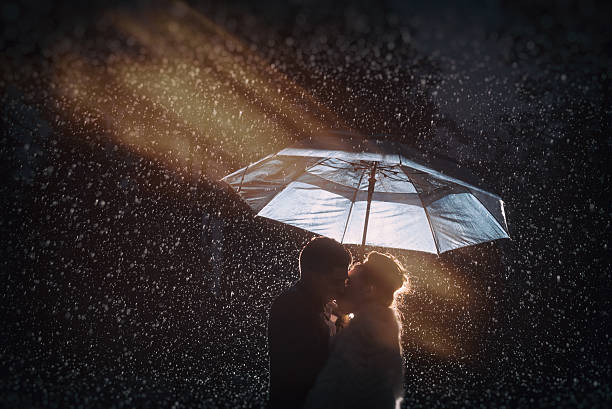
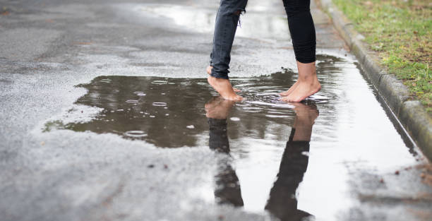

But there was one person who stirred all those buried things in her. Kian.

He sat three rows across from her in Literature. The boy with careless curls and eyes that seemed to burn brighter when he smiled. He wasn’t loud, but there was something in the way he moved—unbothered, authentic—that made people stop and look. He didn’t try to belong; the world simply curved around him. And he had no idea what he did to Alina. At least, she thought he didn’t. From behind the wall of her silence, she watched him. When he laughed at something the teacher said, when he offered his pen to someone who forgot theirs, when he stayed behind to help pick up scattered books for a girl who tripped—those were the moments she collected like fragments of light. But she couldn’t let it show. Not in her world.
Because in her world, girls like her didn’t fall in love with boys like Kian. It was improper, too soon, too bold. The weight of her family’s expectations, the whispers of the girls around her, the constant reminder that love was dangerous before its time—it all stitched a barrier around her. So, she buried the feeling. But emotions, like roots, grow in silence.

One day, in class, the teacher paired them for a group assignment. Her pulse spiked. She nodded calmly, but her hands trembled under the table. “Hey,” Kian said, soft and easy. “So… what do you want to do for the project?” She met his eyes for the first time, really met them—and forgot how to breathe. He didn’t look at her like others did. He didn’t rush her. He just… waited. Like her silence didn’t scare him. They worked together for a week. And in that week, Alina felt herself unravel in small, exquisite ways. He was funny without trying, thoughtful without meaning to be. He asked her about books. Music. Her favorite season. And every time she answered, he listened like it mattered. And slowly, she started to speak more. But she still didn’t tell him what she really felt. Because the fear had roots too.

What if he didn’t feel the same? What if he thought she was strange? What if people found out? What if her parents found out? So, she stayed quiet. Until the day he turned to her after class, just as she was slipping her notebook into her bag, and said, “You know… I like talking to you. It’s like—peaceful.” She smiled, small and shy. “I like it too.” He paused. “Sometimes I feel like there’s something you’re not saying.” Alina froze.

She wanted to speak. To scream. To say I think about you more than I should, I love how your eyes crinkle when you laugh, I want to know every version of you. But she swallowed it down and simply said, “Maybe.” He didn’t push. He just nodded. Weeks passed. He still spoke to her. Still smiled. But something shifted. And that shift was what finally broke her. One rainy afternoon, after school, as students scattered and umbrellas bloomed like flowers on the sidewalk, Alina stood under the covered entrance, her bag slung over her shoulder, her heart pounding so hard it almost hurt.

She saw him walking toward the gate, hood pulled up, earbuds in. She called his name. He turned. She walked to him—quick steps, breath shallow, hands clenched. “I need to tell you something,” she said.
He blinked, startled, then pulled out his earbuds. “I’m scared,” she began, voice trembling, “of what people will think, of what I’ll lose. But I can’t keep pretending I don’t feel this. I like you. A lot. Probably more than I should. And I know I’ve been distant or confusing, but I just—I needed you to know.” The rain blurred her eyes. She didn’t know if it was tears or water. He stared at her. And then, slowly, the most beautiful smile broke across his face. “You have no idea how long I’ve wanted to hear you say that.” She blinked. “What?”

“I like you too, Alina. I have for a while. But you were so quiet, so far away, I didn’t want to push you. I didn’t think you’d ever say anything.” And then, standing five inches apart in the rain, they laughed—softly, nervously, completely. No kiss. No dramatic moment. Just two hearts, once guarded by silence, now humming in sync. From that day on, she still didn’t speak loudly. But she no longer had to.

Because he had heard the truth beneath her silence.